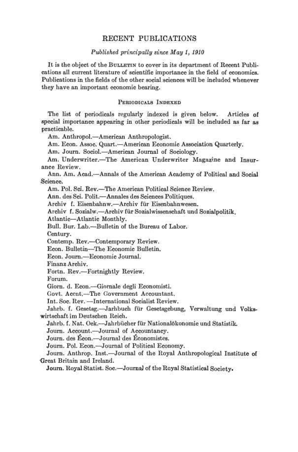

O Bulletin de setembro de 1910: St. Louis, Schmoller e o câmbio
Leitura: 4 min
O programa da reunião de St. Louis, com Ricardo e a tributação da renda em pauta, e 24 resenhas, do Festschrift de Schmoller ao câmbio, aos bancos e às cidades.


O número de setembro de 1910 abre com a convocação da 22ª reunião anual da American Economic Association, em St. Louis, de 27 a 30 de dezembro, com sede no Planters' Hotel.
Cada tema teria uma sessão inteira: aspectos econômicos da imigração, moeda e preços, o problema da pobreza, um século de Ricardo e do ricardianismo, canais e ferrovias, e tributação, sobretudo da renda e do incremento não ganho da terra.
O que mais contavam as notas?
E. Piatt Andrew passou de diretor da Casa da Moeda a secretário-assistente do Tesouro. Thomas Sewall Adams deixou Wisconsin para chefiar o departamento de economia da Washington University, em St. Louis. Carroll W. Doten tornou-se investigador-chefe da comissão de Massachusetts sobre indenização por acidentes de trabalho.
A International Tax Association reuniu-se em Milwaukee. No programa, o imposto sobre a propriedade na Suíça, por Charles J. Bullock, e o imposto de renda como substituto do imposto sobre bens pessoais, por T. S. Adams. Em Paris, uma conferência internacional sobre desemprego tratava de bolsas de trabalho, estatísticas e seguro.
Chicago ganharia um Bureau of Public Efficiency, por iniciativa do City Club, para acompanhar a administração municipal. A Library of Congress passou a publicar uma lista mensal das publicações dos estados. A D. Appleton & Co. anunciou para 1911 o primeiro American Year Book.
Que livros foram resenhados?
São 24 resenhas. Jacob H. Hollander abre a seção com o Festschrift pelos 70 anos de Gustav Schmoller, escrito por cerca de quarenta amigos e ex-alunos como uma história da economia alemã no século XIX.
Hollander lembra que 1910 era “o ano do centenário da publicação do primeiro livro de Ricardo”. (the centennial year of the publication of Ricardo's first book)
Moeda e bancos têm peso. E. W. Kemmerer resenha Elements of Foreign Exchange, de Franklin Escher, e Gold Production and Future Prices, de Harrison H. Brace. H. Parker Willis resenha A Central Bank, de Robert Emmett Ireton, e a nova edição de People's Banks, de Henry W. Wolff, sobre o crédito cooperativo.
Para Kemmerer, o livro de Escher era, em julho de 1910, “o melhor tratamento geral do assunto” publicado no país. (the best general treatment of the subject)
Kemmerer corrige uma afirmação de Escher com dados oficiais de comércio: nos 43 anos de 1867 a 1909, o mês de maior exportação de mercadorias caiu em setembro, outubro ou novembro apenas dez vezes. Dezembro liderou em 23 desses anos.
Corporações e trabalho formam outro bloco. M. B. Hammond resenha os livros de William H. Lough Jr. e Thomas Conyngton sobre finanças e organização de corporações; Roswell C. McCrea, Work-Accidents and the Law, de Crystal Eastman; Charles A. Ellwood, Wage-Earning Women, de Annie Marion MacLean.
Clinton Rogers Woodruff resenha Municipal Government, de Frank J. Goodnow, e A Modern City, organizado por William Kirk. Fecham a seção probabilidade e estatística, com Émile Borel e Camille Jacquart, saúde urbana, habitação, imigração e o voto feminino no Colorado.
Como se organizava a bibliografia?
A seção Recent Publications reúne obras publicadas principalmente desde 1º de maio de 1910, precedida da lista de periódicos indexados.
Na minha leitura
Na minha leitura, a correção de Kemmerer a Escher é a melhor lição de método do número. Uma regra de mercado repetida como certeza, a de que as exportações sempre atingem o pico no outono, não resiste a uma série mensal de 43 anos. É o hábito de testar o lugar-comum contra a estatística oficial antes de explicá-lo.
Kemmerer também aponta como falácia tratar os fretes pagos a estrangeiros como uma drenagem econômica direta. A objeção continua válida: pagar por um serviço recebido é troca, não perda, e o balanço de pagamentos registra os dois lados da operação.
Glossário
- Câmbio (foreign exchange)
- mercado de letras e ordens de pagamento em moeda estrangeira.
- Incremento não ganho
- valorização da terra que não resulta de esforço ou investimento do proprietário.
- Bancos populares (people's banks)
- cooperativas de crédito voltadas a pequenos tomadores.
Artigos desta edição
- Personal and Miscellaneous Notes — editores (pp. 253–260). Convocação da reunião anual de St. Louis, nomeações, a reunião da International Tax Association em Milwaukee, a conferência sobre desemprego em Paris, novos periódicos e iniciativas de eficiência municipal. JSTOR
- Die Entwicklung der deutschen Volkswirtschaftslehre im neunzehnten Jahrhundert: Gustav Schmoller zur siebenzigsten Wiederkehr seines Geburtstages — Jacob H. Hollander (pp. 261–263). Festschrift em dois volumes que conta o desenvolvimento do pensamento econômico alemão no século XIX seguindo o plano de um tratado sistemático. JSTOR
- Maxime Kovalewsky, La France économique et sociale à la veille de la Révolution: Les Campagnes — John H. Gray (pp. 263–264). Estudo das condições do campo francês às vésperas da Revolução. JSTOR
- Alexander Wachs, Die volkswirtschaftliche Bedeutung der technischen Entwickelung der deutschen Wollindustrie — Chester W. Wright (pp. 264–266). Monografia da série Technisch-volkswirtschaftliche Monographien sobre o significado econômico do progresso técnico na indústria alemã de lã. JSTOR
- Lewis Henry Haney, A Congressional History of Railways in the United States, 1850–1887 — Avard L. Bishop (pp. 266–267). Continuação do estudo do autor sobre as relações entre o Congresso e as ferrovias, entre auxílio e regulação, até a Interstate Commerce Act de 1887. JSTOR
- Grabower, Die finanzielle Entwicklung der Aktiengesellschaften der deutschen chemischen Industrie — John H. Gray (pp. 267–268). Tese de doutorado apresentada em Berlim sobre o financiamento das sociedades anônimas da indústria química alemã e suas relações com os bancos. JSTOR
- William H. Lough Jr., Corporation Finance; Thomas Conyngton, The Modern Corporation, 4ª ed. — M. B. Hammond (pp. 268–271). Dois livros sobre promoção, organização e gestão de corporações, o primeiro como volume IV da série Modern Business. JSTOR
- Spartaco Bassi, Gli Infortuni sul Lavoro Agricolo — James B. Morman (pp. 271–272). Estudo sobre os acidentes no trabalho agrícola e a legislação a respeito. JSTOR
- Crystal Eastman, Work-Accidents and the Law — Roswell C. McCrea (pp. 272–274). Volume do Pittsburgh Survey sobre os acidentes de trabalho e o tratamento que recebiam da lei. JSTOR
- Annie Marion MacLean, Wage-Earning Women — Charles A. Ellwood (pp. 274–275). Resultados de uma investigação da Young Women's Christian Association, iniciada em 1907, sobre as condições das trabalhadoras assalariadas em várias regiões do país. JSTOR
- Franklin Escher, Elements of Foreign Exchange; Harrison H. Brace, Gold Production and Future Prices — E. W. Kemmerer (pp. 275–279). Duas exposições populares, uma sobre o funcionamento do mercado de câmbio e outra sobre a produção de ouro e os preços. JSTOR
- Robert Emmett Ireton, A Central Bank — H. Parker Willis (pp. 279–280). Monografia que reúne fatos e informações sobre a proposta de um banco central. JSTOR
- Henry W. Wolff, People's Banks: A Record of Social and Economic Success — H. Parker Willis (pp. 281–282). Terceira edição, quase um livro novo, sobre o sistema de crédito cooperativo nos principais países. JSTOR
- International Tax Association, State and Local Taxation: Third International Conference, Louisville, 1909 — C. C. P. (pp. 283–284). Anais da conferência de Louisville, com os trabalhos apresentados e as resoluções da associação. JSTOR
- Émile Borel, Éléments de la Théorie des Probabilités — C. W. A. V. (pp. 285). Manual de probabilidade com cinquenta problemas para fixar as fórmulas estabelecidas. JSTOR
- Camille Jacquart, Essais de Statistique Morale, II: Le Divorce et la Séparation de Corps — Lewis Meriam (pp. 285–287). Ensaio estatístico sobre o divórcio e a separação de corpos. JSTOR
- Rudolph R. Reeder, How 200 Children Live and Learn — Ludwig B. Bernstein (pp. 287–289). Relato da experiência do autor na educação de crianças acolhidas em instituição, apresentado como contribuição à pedagogia dos orfanatos. JSTOR
- Hollis Godfrey, The Health of the City — Henry Clayton Metcalf (pp. 289–291). Capítulos descritivos sobre os problemas de saúde das cidades. JSTOR
- Frank J. Goodnow, Municipal Government — Clinton Rogers Woodruff (pp. 291–294). Tratado sobre o governo municipal pelo professor de direito administrativo e ciência municipal de Columbia. JSTOR
- William Kirk (org.), A Modern City: Providence, Rhode Island, and Its Activities — Clinton Rogers Woodruff (pp. 294–295). Retrato coletivo das atividades de uma cidade americana, escrito por Kirk e colaboradores. JSTOR
- Lawrence Veiller, Housing Reform — E. E. Pratt (pp. 295–296). Pequeno manual sobre reforma habitacional publicado pela Russell Sage Foundation. JSTOR
- Clinton Rogers Woodruff (org.), Proceedings of the Cincinnati Conference for Good City Government — Arthur C. Ludington (pp. 297–298). Anais da conferência de 1909 e da reunião anual da National Municipal League, com a mesa-redonda sobre a cédula curta (short ballot). JSTOR
- George T. Flom, A History of the Norwegian Immigration to the United States; Thomas B. McCormack (org.), Memoirs of Gustave Koerner, 1809–1896; Emily Greene Balch, Our Slavic Fellow Citizens — A. B. Faust (pp. 298–305). Três livros sobre a história e a influência de grupos de imigrantes nos Estados Unidos. JSTOR
- Booker T. Washington, The Story of the Negro: The Rise of the Race from Slavery — Ulysses G. Weatherly (pp. 305–306). Relato popular, em dois volumes, das conquistas econômicas e culturais da população negra americana. JSTOR
- Helen L. Sumner, Equal Suffrage — John B. Phillips (pp. 306–308). Resultados de uma investigação no Colorado sobre o voto feminino, feita para a Collegiate Equal Suffrage League do estado de Nova York. JSTOR
- Recent Publications (pp. 309–385). Bibliografia corrente, sobretudo de obras publicadas desde 1º de maio de 1910, precedida da lista de periódicos indexados, com livros e artigos por seção temática. JSTOR
Fontes
- Personal and Miscellaneous Notes (pp. 253–260). JSTOR · Internet Archive (PDF)
- [untitled] The Economic Bulletin, (1910-09-01), pages 261-263 (pp. 261–263). JSTOR · Internet Archive (PDF)
- [untitled] The Economic Bulletin, (1910-09-01), pages 263-264 (pp. 263–264). JSTOR · Internet Archive (PDF)
- [untitled] The Economic Bulletin, (1910-09-01), pages 264-266 (pp. 264–266). JSTOR · Internet Archive (PDF)
- [untitled] The Economic Bulletin, (1910-09-01), pages 266-267 (pp. 266–267). JSTOR · Internet Archive (PDF)
- [untitled] The Economic Bulletin, (1910-09-01), pages 267-268 (pp. 267–268). JSTOR · Internet Archive (PDF)
- [untitled] The Economic Bulletin, (1910-09-01), pages 268-271 (pp. 268–271). JSTOR · Internet Archive (PDF)
- [untitled] The Economic Bulletin, (1910-09-01), pages 271-272 (pp. 271–272). JSTOR · Internet Archive (PDF)
- [untitled] The Economic Bulletin, (1910-09-01), pages 272-274 (pp. 272–274). JSTOR · Internet Archive (PDF)
- [untitled] The Economic Bulletin, (1910-09-01), pages 274-275 (pp. 274–275). JSTOR · Internet Archive (PDF)
- [untitled] The Economic Bulletin, (1910-09-01), pages 275-279 (pp. 275–279). JSTOR · Internet Archive (PDF)
- [untitled] The Economic Bulletin, (1910-09-01), pages 279-280 (pp. 279–280). JSTOR · Internet Archive (PDF)
- [untitled] The Economic Bulletin, (1910-09-01), pages 281-282 (pp. 281–282). JSTOR · Internet Archive (PDF)
- [untitled] The Economic Bulletin, (1910-09-01), pages 283-284 (pp. 283–284). JSTOR · Internet Archive (PDF)
- [untitled] The Economic Bulletin (1910-09-01), page 285 (pp. 285). JSTOR · Internet Archive (PDF)
- [untitled] The Economic Bulletin, (1910-09-01), pages 285-287 (pp. 285–287). JSTOR · Internet Archive (PDF)
- [untitled] The Economic Bulletin, (1910-09-01), pages 287-289 (pp. 287–289). JSTOR · Internet Archive (PDF)
- [untitled] The Economic Bulletin, (1910-09-01), pages 289-291 (pp. 289–291). JSTOR · Internet Archive (PDF)
- [untitled] The Economic Bulletin, (1910-09-01), pages 291-294 (pp. 291–294). JSTOR · Internet Archive (PDF)
- [untitled] The Economic Bulletin, (1910-09-01), pages 294-295 (pp. 294–295). JSTOR · Internet Archive (PDF)
- [untitled] The Economic Bulletin, (1910-09-01), pages 295-296 (pp. 295–296). JSTOR · Internet Archive (PDF)
- [untitled] The Economic Bulletin, (1910-09-01), pages 297-298 (pp. 297–298). JSTOR · Internet Archive (PDF)
- [untitled] The Economic Bulletin, (1910-09-01), pages 298-305 (pp. 298–305). JSTOR · Internet Archive (PDF)
- [untitled] The Economic Bulletin, (1910-09-01), pages 305-306 (pp. 305–306). JSTOR · Internet Archive (PDF)
- [untitled] The Economic Bulletin, (1910-09-01), pages 306-308 (pp. 306–308). JSTOR · Internet Archive (PDF)
- Recent Publications (pp. 309–385). JSTOR · Internet Archive (PDF)
- Sumário da edição no JSTOR: The Economic Bulletin, vol. 3, nº 3.
Documento em domínio público (EUA, publicado antes de 1931), via JSTOR Early Journal Content e Internet Archive. Resumo e comentário do autor deste site, sem afiliação com a American Economic Association. Encontrou um erro? Escreva: a correção é publicada no próprio texto, com data.
← Nº 108 · Field, 1910: sessenta anos de leis contra o trabalho infantil em Nova Jersey Nº 110 · Mason, 1910: a seda americana, filha da tarifa →